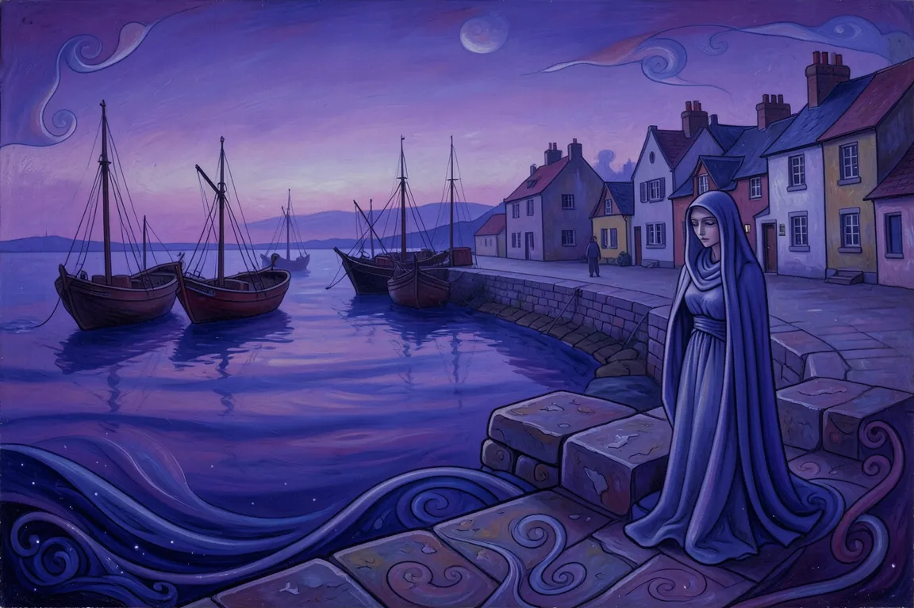

живопись · 1886–1910 · также: Живопись символистов, Сон конца века (fin de siècle)
Картины сна, мифа, смерти и желания, где фигура или форма означает идею. Настроение тихое, странное и внутреннее; линия и цвет выбраны, чтобы намекать, но не объяснять.

Главная идея
Картина должна намекать на внутреннюю идею символом и настроением и отворачиваться от плоской поверхности видимого мира к сну и духу.
Принципы дизайна
Показывайте идею образом: сфинкс, цветок с лицом, парящая голова, женщина под вуалью, тёмный омут.
Держите пространство неглубоким и неподвижным, с плоским декоративным полем 40–60% за главной фигурой.
Ставьте фигуру в центр или на ясную ось и держите её неподвижной, с закрытым или далёким взглядом.
Берите ограниченную тусклую самоцветную палитру: фиолетовый, глубокий синий, золото и зелёный, с бледной плотью и тёмным фоном.
Рисуйте длинной мягкой плавной линией 2–6 мм и пусть контур изгибается, как стебель или волос.
Размывайте края в дымке и сумерках и сплавляйте свет в сияние без источника.
Оставляйте одну вещь без объяснения: название, взгляд или предмет, которому нет места в сцене.
Антипаттерны
Простая буквальная запись повседневной жизни
Резкий яркий дневной свет с сильными падающими тенями